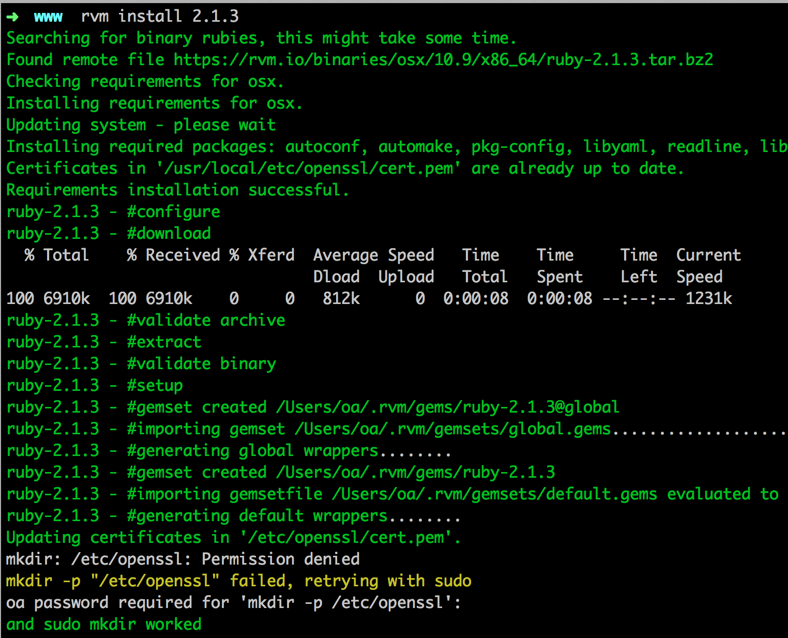

更新 OSX

更新 Xcode

更新 OSX
更新 Xcode
ruby -e "$(curl -fsSL https://raw.githubusercontent.com/Homebrew/install/master/install)"

brew install git

brew update

brew tap homebrew/dupes

brew install apple-gcc42

安裝 ImageMagick 需先有 X11 的 support,OSX 10.8 拿掉了... http://xquartz.macosforge.org/landing
它是 .dmg 檔案，基本上下一步、下一步的安裝就可以，安裝完後重開。

brew install imagemagick

官網下載 .dmg 檔
http://dev.mysql.com/downloads/file.php?id=454017

一樣一直下一步、下一步安裝

打開系統偏好設定，開啟 MySQL


加 MySQL PATH 至 ZSH
vim ~/.zshrc

echo $PATH

設定 root 密碼 http://stackoverflow.com/questions/6474775/setting-the-mysql-root-user-password-on-osx
mysql -u rootuse mysql;update user set password=PASSWORD("你的密碼") where User='root';flush privileges;quit注意！設置密碼 要記得加上引號！假設密碼為 1234，應該寫為：
update user set password=PASSWORD("1234") where User='root';
參考 https://rvm.io/rvm/install/
curl -L https://get.rvm.io | bash -s stable

檢查是否安裝成功，重新開啟 iTerm，輸入 rvm -v

echo '[[ -s "$HOME/.rvm/scripts/rvm" ]] && . "$HOME/.rvm/scripts/rvm" # Load RVM function' >> ~/.bash_profileecho '[[ -s "$HOME/.rvm/scripts/rvm" ]] && . "$HOME/.rvm/scripts/rvm" # Load RVM function' >> ~/.zshrc若指定預設 ruby 版本時出現權限問題可以這樣做...
suod chown xxx:root /usr/local/bin #xxx 是你的user
rvm 使用範例 http://beginrescueend.com/rvm/basics/
``` rvm list # 列出電腦中已經安裝的 ruby 版本 rvm list known # 列出所有可安裝的 ruby 版本 rvm ruby-1.8.7-p334 # 切換ruby 版本到 ruby-1.8.7-p334 rvm ruby-1.8.7-p334 --default # 設定 ruby-1.8.7-p334 為預設的版本 rvm install ruby-1.8.7-p334 # 安裝 ruby-1.8.7-p334 ```
rvm 列出可以安裝的 ruby 版本，rvm list known

安裝 2.1.3，rvm install 2.1.3

測試是否安裝成功，ruby -v

若有出現 readline.c 的錯誤時
rvm package install readline # 然後在安裝指令的後面加上 -C --with-readline-dir=$rvm_path/usr rvm install 1.9.3 -C --with-readline-dir=$rvm_path/usr
rvm rubygems current

檢查是否安裝成功，gem -v

設定 --no-ri --no-rdoc 的參數, 一般安裝 gem 也會同時安裝該 gem 的文件, 但通常這些文件都是在網路上看的, 因此不需要浪費空間和時間安裝在自己的電腦
vim ~/.gemrc # 打開 ~/.gemrc # 加上以下後, 存檔重新登入命令列即可 gem: --no-ri --no-rdoc

若已經有設定預設, 則不需要 --no-ri --no-rdoc
如果是要安裝目前最穩定版本，gem install rails --no-ri --no-rdoc

檢查是否安裝成功，rails -v

如果是要安裝特別版本
gem install rails -v=3.2.8 --no-ri --no-rdoc